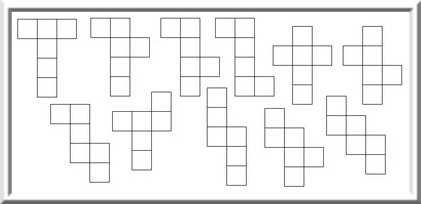

A kocka *

A kocka
A kocka (vagy szabályos hexaéder) egy térbeli geometriai alakzat, egy speciális téglatest. 6 négyzet alakú lapja és 12 egyenlő hosszúságú éle van, amelyek 8 csúcsban találkoznak. A négyzet térbeli megfelelője. A kocka egy tetszőleges csúcsát összekötve az ebben a csúcsban összefutó négyzetlapok nem szomszédos csúcsaival, szabályos tetraédert kapunk. Egy ilyen tetraéder térfogata a kocka térfogatának egyharmadát teszi ki. A maradék négy egybevágó, nem szabályos gúla (szintén tetraéder) térfogata egyenként a kocka térfogatának hatoda. A kocka csúcsai ily módon két, egymáshoz képest középpontosan szimmetrikus szabályos tetraédert határoznak meg. (Ezek metszete oktaéder.) A kocka hat négyzet alapú gúlára osztható úgy, hogy szimmetriaközéppontját a csúcsokkal összekötő szakaszok mentén szétvágjuk. Ha ezeket egy másik kocka lapjaihoz illesztjük, akkor rombododekaédert kapunk. A kocka dodekaéderbe írható úgy, hogy a kocka csúcsai a dodekaéder csúcsaira illeszkednek, és a kocka élei a dodekaéder lapátlói.
Szimmetriái
A kockának
- három négyfogású forgástengelye (szemben fekvő oldalak középpontjain át)
- négy háromfogású forgástengelye (testátlók)
- hat kétfogású forgástengelye (élfelező pontokon át)
- kilenc szimmetriasíkja
- egy szimmetriaközéppontja (középpont)
van. Az identitást leszámítva a négyfogású tengelyek három-három, a háromfogású tengelyek két-két szimmetriát adnak. Összesen a kocka szimmetriacsoportjának 48 eleme van. Ez a kocka- vagy oktaédercsoport.
Matematikai összefüggések
| Tulajdonság | Képlet |
|---|---|
| felszíne | |
| térfogata | |
| beírható gömb sugara | |
| köréírható gömb sugara |  |
| éleit érintő gömb sugara |
Mértani arányok
A kockának 11 lényegesen különböző testhálója van. A lapok színezéséhez legalább 3 szín kell. A kocka az egyetlen szabályos test, amivel a tér hiánytalanul kitölthető. A szabályos poliéderek között egyedül neki vannak páros oldalszámú lapjai, így az egyetlen platóni test, ami zonoéder, vagyis aminek minden lapja középpontosan szimmetrikus.
